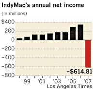

Compelling confirmation that we're in the early phase of a world-historic economic collapse can be found in this fact: Our rulers are moving quickly to redistribute blame for the disaster from those who precipitated it to those who are seeking to protect themselves from it.
In the fashion of Stalin deflecting blame for the failure of central planning onto the backs of faceless "wreckers" or randomly selected "saboteurs," the Regime in Washington is literally preparing to criminalize the act of "talking down the economy."
If you're an investment broker caught speaking ill of the federal bailout of Fannie Mae and Freddie Mac, or advising your clients to short those two federally supported deadbeat institutions, you could incur the wrath of the Securities and Exchange Commission. Under the Clap-for-Tinkerbell assumptions being imposed on the markets by the Regime, such actions quite likely will be designated a form of "market manipulation" -- what the SEC, in a July 13 press release timed to coincide with Commissar Paulson's bailout announcement, called "the intentional spread of false information intended to manipulate securities prices."
"Spreading false information," in this context, means "the publication of facts incompatible with the Regime's priorities," which at present means "bolstering confidence" in the terminally insolvent, fatally corrupt fascist entities called Fannie Mae and Freddie Mac.

This is why legendary investment guru Jim Rogers was asked, in a July 15 CNBC interview, if he was "talking down" Fannie and Freddie. Rogers breezily acknowledged he has been "short" on them for three or four years, and is in the same position regarding "a lot of banks." The SEC's advisory against spreading "false information" was followed on July 15 by an emergency order from the SEC curtailing short selling in financial stocks, particularly those of Fannie and Freddie.
That fact that an executive branch agency can simply issue such an order (or, in this case, reiterate an earlier order), with the supposed force of law, should prompt at least some people to ask: in what sense are the investment markets a form of "free" enterprise?
Jim Rogers can afford to be candid about his successful investment strategy, given that he has fled the proto-totalitarian United States for the relatively free shores of authoritarian Singapore. Other honest investors are not so fortunate.
Yesterday (July 16) the SEC began issuing subpoenas to wreckers ... er, "market manipulators" suspected of contributing to the collapse of Bear Stearns and the 78 percent drop in Lehman Brothers' share value so far this year. As far as the SEC is concerned, we're not dealing with people who make an honest living, so truth is not going to be considered a suitable defense for those accused of propagating "false information" about Fannie and Freddie, or any other entities on the receiving end of federal bail-outs.
And of course, it will avail nothing to invoke sound logic by pointing out that the SEC is an enforcement instrument of a Regime guilty of wholesale "market manipulation," with plans for much, much more of the same. With Fannie and Freddie now assured of a place on the lifeboat, we can expect many others to fall in line -- Lehman Brothers, Goldman Sachs, Bank of America, Detroit's "Big Three".... Federal bailouts will be an immense boon to bond-holders, while wiping out shareholders. The former group includes the wealthiest and most powerful investment houses in the world; the latter includes the retirement plans of millions of small investors who are already being devoured alive by inflation.
SEC Chairman Christopher Cox explains that the Stalinoid crack-down on short-selling and propagation of "false" information is a "preventive" measure intended to prevent catastrophic bank runs. "If an institution is to fail in the marketplace, it should be for legitimate reasons based on the market's appraisal of objective information," insisted Cox, leaving the rest of us gagging on the stench of his hypocritical sanctimony. "It should not be based on the deliberate manufacture of false information and illegal naked short selling. We're simply trying to remove tools of mischief so that markets can operate efficiently."
The "efficient" operation of the marketplace, apparently, demands nothing less than giving nineteen failing financial institutions special access to the Federal Reserve's "discount window" -- making them the immediate beneficiaries of currency and credit inflation that will literally steal the bread from the tables of working Americans -- and then swaddling them in immunity from market discipline by prohibiting investors from acting rationally based on the obvious implications of such federal intervention.
Perfectly rational panic: Depositors line up at the Encino, California branch of the failed IndyMac Bank, eager to withdraw their savings.

Apparently, American investors have a patriotic duty to be bullish on those financial institutions favored by the Regime -- and, starting next Monday, confront the prospect of ruinous SEC investigations and other harassment should they be found insufficient zealous in pumping up those collapsing entities.
I'm exaggerating, but just barely.
Meanwhile, the FBI is pursuing a separate but complimentary track by investigating the possibility that fraudulent mortgage loans contributed to the collapse of California's IndyMac Bancorp, which -- after being nationalized -- is operating under the name of IndyMac Federal Bank.


That fraud was involved in the failure of IndyMac -- and the impending collapse of dozens or hundreds of other institutions -- is indisputable: It was, after all, a satellite of the Federal Reserve. The FBI is an appendage of the Regime, so it will dutifully focus on purported fraud committed at the retail level by individual mortgage officers, rather than dealing with the wholesale fraud carried out as a matter of policy by the Federal Reserve.
The purpose of these enforcement actions, once again, is to fortify "confidence" in the financial markets in order to avoid bank runs. But the markets are not entitled to our confidence, and a comprehensive run on the banks and the markets is really the only rational course of action -- that is, panicking now, before we're given official permission to panic, by which time it will be too late.
It is because they didn't panic in a timely fashion that many investors and depositors in IndyMac are now caught in what the Los Angeles Times correctly calls a "financial hostage drama."
They're told that their money is "safe" now that it is in an institution owned and operated by the FDIC, only to learn that the funds they need are "frozen." This means, of course, that the money is "safe" from being used by those who earned it and to whom it properly belongs.
Not surprisingly, this news has riled up many of IndyMac's depositors, who are now being told that they must accept the federal impoundment of their money with grace and equanimity, lest they be seized and incarcerated by the local branch of the Homeland Security State (still quaintly known to many as the "local" police).
Remember when police used to pursue thieves? In an increasingly familiar role, Los Angeles police personnel aid the robbers by threatening to arrest any victims who don't remain properly calm and docile as their life savings are plundered at the newly nationalized IndyMac Bank.

I suppose it's not unprecedented for the wealthy and powerful, in their eagerness to comandeer lifeboats on behalf of their "kind," to shove aside women and children aside.
The new wrinkle in this catastrophe is the requirement that those denied access to the lifeboats, and forcefully discouraged to take any individual action to save themselves, are required to maintain a cheerful, grateful demeanor even as they begin the long, frigid descent into the abyss.
 On sale now!
On sale now!Dum spiro, pugno!
56 comments:
'Please, sir, I want some more.'
-Oliver Twist
'Ba-a-ah!'
-American Public
Our criminal govt. no longer
bothers covering their crimes with
phoney procedure. Any bureau can
proclaim any absurdity they wish
and demand our obesiance.
NO one is protecting our lives,
liberty or property.
But then again, do we even possess
these things anymore?
The Federal Reserve is nothing but a high end "lrgal" racket.
Our forefather's would not have acknowledged us as men. To accept what is being done, and do nothing is, as well, a wholesale denial of God. "Resistance to tyrants is obedience to God" This regime, and it's minions, is NOT lawful authority, sanctioned by God. This is a criminal syndicate, robbing under color of law from those women and children that Will referenced. Our responsibility, as men is to deny, obfuscate, and if need be, stop, by any means necessary, these evil men, (and sadly women). Peoples homes are going to be stolen, are we going to sit by and watch? We need to bring back tar and feathers.............NOW!
Wayne B
Wonder what will happen if people with their money in IndyMac can't get access to it before quarterly tax payments are due in September? "We can't pay our taxes because you're holding our money!" "Tough, fork over serf."
How sick and perverse that the establishment treated Ron Paul like a mental patient when he spoke of the dangers of fractional reserve banking and the all powerful fed. This shouldn't come as a surprise of course. Most people can't be bothered to learn about the system of organized theft under which we live. All of this has happened before, all of this will happen again.
I remember my grandfather ranting about banks in the 1930's. At the time I just thought he was living in a hard, far-away time. He never trusted banks, especially as a prairie farmer who had every penny of his bank accounts vaporized. By the grace of God, he had paid-for land, cattle, and some crops. We today, I fear, are not in as good as shape as my grandfather.
It is hardly a free market when an investor can invest long, but is forbidden to invest short. As a person who appreciates the short investment, especially of late, it angers me to see bailouts, at taxpayer expense, of firms and institutions that should have gone broke. The free market model usually works except in the case of Bears and Stearn or Freddie/Fannie? Then the model is somehow wrong? At what point does a firm become too big to fail? Or is it really a matter of "Too corrupt to let the public know"?
By the same token, in a free market, there should have been no Fannie or Freddie to start with. I believe that Freddie / Fannie's only purpose was to provide long term funds (30 year loans), that banks did not want to loan. Banks do not want to make 30 year loans, and wisely so. It was by artificially stretching the length of a home loan to 30 years that created a surge in construction.
If we did not have Fannie, if common practice was still to pay for your house in 4 or 5 years, what would prices be today? What level of debt would consumers have today? How strong of a country and economy would we have if everyone was paying cash and investing in free market, sound investments?
How do we get out from Babylon? Are there any biblical principles to follow so that we can escape this collapse of the fiat money system? What would be biblical solutions for individuals to be removed as far as possible from this money system that has enslaved us?
The police are becoming more and more like the "gatherers and sharers" infesting the Saruman-occupied Shire. All gathering, no sharing. And as one of the hobbits said, "Everything except rules [gets] shorter and shorter."
Honestly...Rogers has millions and pulled his money out long ago. I respect his investment acumen but believe that it's reckless and truly amazing he admited what he's doing. We on the other hand, those who live with significantly less, are left with whats left. The answer, "Deal with it". Or some other rot gut excuse like "You should do as I". Oh really!? With what? In many regards all financial institutions & their instruments are based on good faith. Not even gold or silver can save you when nobody has faith in it. And it is only worth whatever someone else is willing to pay. But paid for in what? While I agree that the FED is as crooked as the night is long I also believe that manipulation, hiding under cover of free enterprise, while it may be LEGAL leaves the unsuspecting and less savvy at the mercy of the unscrupulous. They were as thick as thieves at Stearns and are ensconced everywhere else, expecially in DC (notice the revolving door twixt finance, industry and the government). This isn't by accident and has been a long time coming. Best thing is to get your financial house in order, sell off anything that is dragging you under and ride the tide. I'm simply amazed at all the garbage people feel they "need". Your parents and grandparents didn't and neither do you.
Focus of investigation so far: Goldman Sachs Group Inc., Deutsche Bank AG and Merrill Lynch & Co., Let me know if they start hassling innocent folk.
Your powerful and amply sourced writing concerning our financial situation is dead on target, IMO. Certainly nothing here I disagree with.
I was not always in the know about macro-economic matters and our station as a nation and the aggregate people as whole, but rather only on a personal (private) level. I guess you could say I was mostly ignorant for many years on just how insidious, cloaked, and hellishly pandemic the government cancer infestation really is within the economic sphere.
From funding old folks' health care, legal narcotics, social security; funding to provide the easy credit for young folks' student loans; funding farmers to grow corn for biofuel production instead of food; funding corporate expansions and adventures in hostile lands (Exim Bank, USAID, etc.); funding the migration of low-class folk into middle-class neighborhoods (but never "Rockefeller" or upper-class neighborhoods, it must be noted) through its HUD tentacle; and its hands are stirring in many other economic activities. Their hands are always busy insidiously and quasi-covertly (albeit more overtly nowadays) unnaturally altering the supply-demand paradigm. The primary purpose is to injure or render the middle-class impotent and irrelevant. I think extinct might actually be the ultimate goal since it's been largely silent, and hence in essence irrelevant, already for decades.
I say never attribute to - what superficially may appear to be - ignorance/stupidity/insanity those activities and policies that, in reality, are really driven by specific and purposeful agendas. If the commoner herd thinks a policy or course of action merely stupid, the better from their POV.
I also grow tired of the so-called "Law of Unintended Consequences." Anyone who thinks and looks far ahead beyond tomorrow before making a major critical decision on taking an action or making policy should easily be able to see the inevitable consequence of a given act/policy.
Anyhow, after becoming a bit more learned about economic machinations in the big picture sense over the last decade and a half or so, I'm amazed it's taken this long for signs of the imminent economic tsunami to finally reveal themselves.
Larry Burkett wrote a book entitled The Coming Economic Earthquake in 1991, and one entitled Whatever Happened to the American Dream in 1993, and many other authors have documented our economic "house of cards" as well. So nobody can truthfully say they haven't been warned; the writing's been on the wall for ages already, but the herd ignored it. When it hits 'em in the pocketbook directly, however, like the IndyMac event playing out plainly illustrates, they begin to notice. But it's more often than not far too late to react and recover by then.
Unfortunately, reaping what is sown today doesn't happen tomorrow, but mostly over a looooooong period of time. Of course, by the time of the harvest, the planting of the original seed(s) that produced the bountiful harvest in the first place has long been forgotten. When the reaping finally does manifest itself, it's always goin' to be a bountiful harvest...ugh.
Although many DIVERSE folk, hailing from nearly all socio-economic segments - the Wall Street set to the Watts set and most segments in between - for years, if not decades, have been sucking the teat heartily, only the middle class alone is purposely always left with the bill.
Being the Baptist that I am, I used to wonder years ago how America could be irrelevant in the latter days and unmentioned by prophetic texts if it is seen as such a "great power" by most, or was. After reading Burkett's books in the mid-90s and through my own experiences, however, I began to get a clue, even though I procrastinated in preparation for the economic/social upheaval as many others have I suppose. Whereas many are blissfully ignorant, I have no excuse.
But to not have a clue now that America is in steep decline by just about any measure? Well, given the naked events of the present, I think the answer by now should be beyond obvious, at the very least in terms of its economy, to even the least and simplest among us by now. One clear, easily discerned long-term consequence of living beyond ones means on a continual basis is that you go broke eventually.
Oh wait...
I suppose if we could understand the biblical view of economics, which brought us such ideas as Sabbath years and Jubilee to re-balance the system and remove accumulated debt, we might go a long ways to preventing this kind of crime. Being such a radical change from what we have now, I rather doubt it would find broad acceptance any time soon.
What about a Constitutional Jubilee?
The market manipulation of the century was Bush's patently phony "Saddam's WMDs" story, which involved dozens of criminal co-conspirators, killed thousands, and displaced millions.
Chris Cox pumped his chest and called his SEC a law enforcement agency. Yeah, right. Where are the law enforcers to round up the Iraq War conspirators? I guess the law has become somewhat of a joke, hsan't it Chris, you pompous ass.
Jubilee?
Repudiate the debt.
We have been swindled by
every investor who bought into
this pernicious scam facilitated
through the illegal private
monopolization of the dollar.
America has been enslaved by a
debt that can, by design, never
be repaid.
The Constitution
has been nullified by all three
branches of the fed gov.
This is a willing bad faith
breach of contract.
We need to dismember the
federal government, repudiate
the debt and reinstate
the Articles of Confederation.
Jubilee!
It occurred to me today that, from a scriptural perspective, God has always made it clear that He will bless and provide for those who believe and who obey Him and follow His commandments. Few are willing to do this today, including those who call themselves "Christians." Gods answer? I believe it is "the Lord giveth, the Lord taketh away" in action. Why would God continue to bestow the blessing of liberty upon a nation that so obviously does not value it at all? Why also would He continue to bless a nation with hope, peace, and abundance when said nation shows nothing but contempt for these gifts, turns its back on His commandments, and chooses so flagrantly to ignore the message that He sent His only son to impart?
Truly Ameri[k]a is in the same position as the ancient Israelites were on so many occasions when they displayed the same blasphemous behavior. The days - long, LONG ones- of reckoning are upon us.
But if Jubilee became a real movement within the US, say with some novel ahimsan strike in support shouldn't you aim for something more than just getting back stately independent power? From this viewpoint, California as with most of the states of the US is far bigger than Britain, and Britain is already too big. Surely the nations should be further broken down than that, to the real human-scale, and then lightly re-federated from there.
If you people want to have a genuine, democratic constitutional sovereignty, that is. Things get out of whack because they are too big. Democracy only functions properly at the level of the small. The modern world worships gigantism, no more so than in the US.
I say: yes to jubilee but for God's sake aim higher!
Hallelujah ?
all,
i think the good news here is that God is still in control. He's allowing this to happen. i would venture to say that the current economic state of affairs is like castor oil. it may be the only means to rid the body--america--of the putrid matter in its stomach.
heck, we've already tried sticking our finger down our throat to induce a gag reflex--Nov 06--but that did not work. So leave it up to God to "help us out" and bring about change. funny, he enslaved the israelites in babylon to save them. who knows...maybe this is along the same lines. i think we will come out better for it. but this i must say, we can't say we weren't warned.
rick
Please pardon the off-topic message, but unpunished official misconduct has been a constant theme of Will Grigg's. Today the NY Times -- presumably playing its 'government stenographer' role -- informs us that the exclusionary rule for improperly seized evidence is obsolete, and may have to go. The proposal is buttressed by this fatuous assertion:
"Several justices have in recent years questioned whether the rule still makes sense in light of what they called the increased professionalism of the police and the availability of alternative and arguably more direct ways to punish misconduct, including internal discipline and civil suits."
http://tinyurl.com/6axyzf
"Increased professionalism"? What does that mean -- that they have black uniforms, machine guns, and armored personnel carriers now?
"Internal discipline"? Like the cops who pumped 50 bullets into Sean Bell and went scot free?
Dripping with bias, the article paints the U.S. as a loony-left outlier among developed nations. It cites a few examples of suppressed evidence, but does not breathe a word about the legion of instances in which cops illegally seize evidence and even kill innocents, and get away with it. Defense lawyers know that the exclusionary rule is already a weak, last-ditch defense, in a court system which is tilted top-to-bottom toward the prosecution and filling the prison-industrial complex.
Will Grigg and the NY Times inhabit two different planets of fact and logic.
If the exclusionary rule goes, get ready for the omnipresent sound of splintering wood, as doors are kicked down with impunity by SWAT teams and DEA goon squads.
Fourth Amendment? We don't need no stinkin' Fourth Amendment!
Tom are you asking about what we can do as outsiders to suffer as little as possible from the financial judgment that is going to fall on the country, or is your query about "if righteous men were running the country how would this look different"?
William Grigg is the best living writer I've seen for clearly showing half of our descent into tyranny- specifically the half where the government is at fault. Unfortunately, the other half of the equation is that "We the People", (not this blog but our countrymen as a whole) have in large measure lost the virtue required to sustain freedom.
Tyranny is awful, but weak and awful people need it to protect themselves from something even worse. There is no point in trying to force good government on immoral people. For whom does this suck the worst? Those under the boot heel who have the virtue required to live in freedom without destroying themselves and others.
A virtuous population is the best defense against tyranny.
Hey Mark, democracy is tyranny and it s**ks! So give it a rest.
Dumbocrazy is tribal warfare...Legal violence.
The Fed is in business to bail out their buddies...Did you all think something else?
"A virtuous population is the best defense against tyranny." Amen to that.
Dear Anon, "Democracy" properly understood is not tyranny, it is virtuous government, by the people.
But you are right inasmuch as your point recognises that we are only as free to the extent that we are living in a society that allows us to take part in law-making: the simple principle of liberty under the law..
Liberal ‘representative’ democracy is misnamed, because politics and law-making is now mostly done through unaccountable, overpowerful, unrepresentative channels.
The far better ideal of constitutional, or political rather than merely liberal ‘representative’ democracy aligns closely with the positive republican tradition of democratic thought, once championed by Jean Jacques Rousseau and today found operating, to some degree (also known as direct democracy) in his native Switzerland (albeit still imperfectly) and a few other isolated places worldwide (one of which being the autonmous communities of the Zapatistas in Chiapas.
Rousseau strongly believed that ‘representative’ democracy tended to create an elite ruling class, because of its emphasis on elections rather than participation.
He pointed out that, although it was undoubtedly an improvement on the rule of kings that preceded it, representative democracy was by no means government by the people.
And so, where once these channels helped to free us from the brutal world of kings, they now constitute a democratic trap. Though told we live in a democratic state, we are not yet truly free..
“None can love freedom heartily, but good men; the rest love not freedom, but licence”
So should not those who would like humanity & genuine non-hierarchical freedom to flower now work together in each territorial community of interest to create new political conditions?
This is envisaged as a new constitution of governance, built from the ground up, by ordinary, extraordinary people in common cause.
An inclusive, decentralised, movement that eventually transforms the system. So that one day political decision-making is as it should be: locally centred, popular, non-hierarchical, transparent and accountable, to people.
As mentioned above, the positive republican tradition of ‘liberty under the law’ states that good laws can make us free.
But this theory depends on good laws, and this is only guaranteed when ordinary people, ie everyone gets to meaningfully participate in framing them. And so we move towards genuine social justice and egalite.
Without regular popular participation in law-making, clearly the state will always tend to make bad laws, either over-protecting the interests of an influential and domineering few (often banks, corporations and large landowners), or failing to articulate (or take into account) the deepest aspirations (for justice, freedom, peace) of the powerless majority.
Under our much vaunted systems of representative ‘liberal democracy’, this is exactly what has happened, to our great and abiding impoverishment.
To counter this, it is necessary to build alternative structures of power, independently and from the ground up.
Is not the democratisation of all spheres of life, especially in the places we live and work the key to transforming the whole of our political constitution?
Community by community, from below.
Is this not the path to autonomy? Also known as the positive, republican school of democratic thought, political (as opposed to liberal, ‘representative’ ) democracy.
To elaborate, the ideal of political democracy involves a commitment to:
(1) universal democratic principles.
(2) local, participatory forms of organisation. This is the foundation stone of human freedom: power through local, popular assembly. Building new, alternative community structures will require ongoing face-to-face organisation distinctive to each community, Free Assemblies;
(3) global justice through manifestation of the principle that all must be able to meaningfully participate in the making of laws, to have their voice heard. Law-making powers and the right to develop a new constitution must be in the hands of the people. Power must flow upwards from local forms of organisation where all can be heard. Good people can lead this, and all must be welcomed to take part, no one is damned and the good well help to transform the bad (and never forget the line between the two cuts through every human heart, without exception).
Local powers must work together, through systems of delegation, representation and, where appropriate nominations/electoral process.
Local checks and balances can make accountable regional, national and higher levels of administration. Each local, Free Assembly to be the new, executive arm of government..
(4) democratic transformation of the state of above, from below. This point reiterates (2) and (3) above. The essence of freedom in the positive republican tradition is that liberty, justice and democratic transformation are to be found in, and through the making of laws by people, for themselves, from below;
(5) recognition that the state is merely an interface, a mixture of law and strategic force, constituted as it is and then projected both inwardly, and out. Facing in is the law, or constitution, which may be written, unwritten fascist, socialist, democratic or otherwise. Facing out is strategic force. The latter, which is affected by the nature of the former, may sometimes take the form of war against, co-operation with, or even active support for, the needs of people elsewhere.
As things stand, piecemeal change to the nature of the state are possible, but invariably take place within the fascist-capitalist state paradigm.
Therefore, for real democratic transformation we need to work for a lasting and revolutionary constitutional change of the state of the above, built by people working in common, in each and every community, from within and from below.
(6) an end to corporate power over the state
(7) interdependent solutions For a movement to embody the solutions set out at (1) to (6) it must both embody and promote principles that are win/win: intergalactic and universal: ‘another globalisation’ movement that can work for all.
Peace
After living in a small condo for many years, I decided to upgrade. The housing bubble in Phx was beginning to burst, so we decided to lease a home, and ride it out, in hopes of getting a good deal.
Six months into a twelve month lease, we were informed the home was in foreclosure and we would be evicted shortly if we did not move. Moving was going to be a challenge because of our pets. I admit that I should have acted more quickly, but did not because I thought the opportunity to purchase had come. I had more than ten percent for a down payment, and decided to tender an offer. My offer was rejected, because my credit was refused in spite of a solid pay history on my first mortgage, a steady income, and an actual down payment.
Suddenly, the situation had gone from an 'opportunity' to an outright tradgedy. I could not buy the home, and was faced with relocating on short notice, with cats and dogs. I attended the scheduled court date, and explained my situation to the superior court judge, hoping to obtain an extra week or two to vacate the premises. He looked me squarely in the eye and lied to me from the bench. He claimed there was nothing he could do.
My search became frantic, and the rejections were piling up, not only for mortgages, but for rental property. I was blown away. I didn't figure out what was going on until five days before we were to be evicted. After contacting the credit agencies about my rejections, I began to realize that my identity had been stolen, and my credit destroyed.
One thing lead to another and it came to my attention that the home I was being evicted from was involved in mortgage fraud, an elaborate scheme, of which I was the final stage. The owner had purchased the house way above market, and split the overage with the seller. He never made a payment, knew full well it would be foreclosed and leased it to me to wring the last few dollars he could out of the property before it went back to the bank. Surprise.
I was a little pissed off at this point, and looked into the history of the owner. He had been a real estate agent in Phx area, but allowed his license to lapse two years ago, after bankrolling his son in a local mortgage brokerage. Not only that, but when I checked public court records in our area, it took about two hours for me to locate about sixty-four separate instances of trustee sales on this mans properties in a four year span!
He had about twenty-three separate foreclosures in the twelve months prior to obtaining the mortgage for which he was currently in foreclosure. Not bad enough? How about eitht different foreclosures in progress at the exact time that he was approved for the mortgage fraud for which I was facing eviction.
I was livid. Printed out a stack of official court document from previous foreclosures. I organized them neatly in chronological order, separated those older foreclosures into one pile, those from the year prior to obtaining the present mortgage went in another pile, and just for kicks I made a third pile with the new filings and defaults on other properties presumably in the final stages of the same mortgage fraud circus as I was dealing with. I printed several old listings for the home which had been listed for some time without luck, and each listing showed a subsequent price reduction. Next I printed the purchase details from the foreclosure at hand, which established that he had offered the seller sixty-five thousand over the asking price.
I was feeling like Matlock, or Quincy, it seemed like pretty hard evidence, pretty indisputable evidence. Pretty damning. When the sherriff visited the next time, I asked him in, sat down with him at my table and explained what I had found. I thought surely the fact that this was not my fault, in fact I was the victim of fraud, and I was only asking for a little more time, I could be cut a little slack...not to mention that this particular point is a glaring contradiction in AZ statute that deprives me of Constitutionally guaranteed property rights, due process rights, and rights to enter into and enforce contracts.
Nope. Didn't matter who was right, he had a court order and a job to do. Later I even pointed out to him that the court order allowed him ninety days to complete, that on his own discretion he could give me almost three months and still meet his deadline. He was at my house for a tap dance and pony show three days later.
I was fortunate enough to locate another home on Feb. 13, 2008, and while complete strangers in the employment of Bear and Stearns packed my personal belongings, I was running all over town to finalize the lease and get keys on Valentines day. I narrowly avoided seeing every earthly posession I own vanish into the abyss of the storage container industry that has sprung up to facilitate the foreclosure industry, and that is another barrel of snakes that I won't bother discussing here.
So, it was a narrow escape, my fiance' and I were reduced to renting a Uhaul truck and grabbing our belongings off the lawn, and out of the storage conatiners before their truck could get there to collect. Had their truck arrived sooner, I believe I would have taken up arms in defense of my property. I had removed all of my firearms from the house, into my truck, and I was heavily armed as a result. Moreso than the sherriffs deputy who was present and actively participating in violating my rights, knowing he was in the wrong, without a sign of human decency.
So, in the end, I am certain that my landlord after ensnaring me as the final victim in his mortgage fraud routine, stole my identity from my rental application, and destroyed my credit. Though I have only begun to sort that part of this fiasco out. Given his less than stellar foreclosure record, and the public nature of that information, it is well within the legal standard of "knew or should have known" which establishes a prima facie preponderance of evidence against the bank that made the loan as his accomplices in the fraud.
The kicker here is that I owned another home, you will recall, and still do. I did what I thought was wise, and leased it to a student (it is walking distance from ASU, so it wasn't a problem). But, in AZ the law doesn't allow me to evict or otherwise terminate the lease on my home because I'm not a foreclosing institution. Not that I would have, just that it crystalizes the hypocrisy which could have culminated in shots fired on Valentines day this year.
In AZ the bank gets to terminate the lease, the ONLY innocent party gets screwed all the way to eviction. I was defrauded by the landlord and his lender, they also destroyed my credit (at this point I have to assume that they were all working together) fraudulently, they evicted my fiance' and I and our pets in spite of a legitimate purchase offer. The trifecta of criminal government, criminal banking, and criminal landlord, working in concert, came very close to making us homeless, in spite of the fact that I owned another home, and had fifty thousand in cash for a down payment...only in Amerika!
The only way I was able to secure the home I currently lease, on the day of my eviction, was to pay the lease in full up front. I thank God that I was in a position to afford that, it is the grace administration and I was blessed.
The court (fair and ballanced, code for Communitarian which is neo-communism/code napoleonic) was active participant in the crime,as if lying from the bench wasn't bad enough. The sherriff knew the whole story and didn't give a rats ass about right or wrong, chose to be wrong. The lender and landlord were co conspirators in mortgage fraud who subverted the power of the court and made it their accomplice in crimes against me.
The final irony is that the criminals listed above made sure we were on the street, after which the property sat empty for nearly five months, not even on the market. It finally sold this month, it sold for 350k, which is what I offered...but it sold on an adjustable rate mortgage, with zero down. No kidding, after all the turmoil in mortgages. I smell fish, all over again.
Anyway, I had to relay my story when I read your post today. I'm sorry if I rambled on a bit.
I have become a great fan of your writing, sir. Eagerly awaiting your next post, keep up the great work.
Furious in Phoenix
We live in an action leads to consequence reality. Blame shifting is a misrepresentation (lie) of the relationship between action and consequence (reality) to find scapegoats by those who live by fraud and are determined to continue doing so and to hell with anyone else or survival of civilization (the rules by which we co-operate for MUTUAL self-interest).
Here's the root cause of our social/economic collapse, an easy proof:
http://www.nazisociopaths.org/modules/article/view.article.php/c1/32
And here's the solution devised by our far wiser ancestors whom have been there, done that:
http://www.nazisociopaths.org/modules/article/view.article.php/c1/34
And here's that nature of the REAL game our rulers are playing which can only result in our extinction or, at a minimum, end of civilization:
http://www.nazisociopaths.org/modules/article/view.article.php/36
Bill Ross
(Electronics Design Engineer)
Our problems lie with the
fedgov, not the States. There are
no overarching edicts emmananting
from individual States which are
oppressing other States. The Texas
Supreme Court is not involved with
California civil or criminal code.
It is the smothering effect of
unjust edicts from the
federal Courts that are
wearing us down like flints.
The Federal system is destroying
America.
Our State community could
still be honored and strengthened.
We still have the Articles
of Confederation.
The fedgov has demonstrated its
innate hatred for liberty, the
Republic, our values and way of
life in general. It no longer
bothers with subterfuge but now
commits crimes in broad daylight
while thumbing its nose at our
righteous indignation.
It must be destroyed. Our States
have the legal and moral power to
dissolve the federal government.
They just need the Will to do it.
All that is needed is 2 thirds of
our State capitals to revolt.
That's just 34 State legislatures
that have had enough of this
tyrannical baloney. I'll venture
that we are a lot closer to that
number than many suspect. I would
also venture that the American
military is more than willing to
protect legal proceedings conducted
by a new State covention and
enforce the legal outcome... more
than willing.
This fedgov must be put down.
Not reformed,
not rehabilitated,
but flushed down the toilet.
Screwed, glued and tatooed.
Jubilee!
It can happen.
#######
#######
And nobody names the ROOT
CAUSE...THE BEAST:
Marxian Jews
and
Zionist Jews.
Marxian Jews control U.S.
pop-culture venues ((music,
movies, TV)) while Zionist
Jews control U.S. foreign
policies--to include immi-
gration, refugee and asylum
policies. Both camps have
control of Big Banking and
Big Business and Big News
corporations, which is why
America has become Israel's
PROXY COMBATANT. Read Jew
Benjamin Freedman about how
Zionists are the West's
puppeteers:
Benjamin Freedman Speaks
http://rense.com/general75/neneb.htm
#######
#######
Mark, the Moderator, thanks for asking for clarification. I was asking about we who may suffer under God's punishment if our nation doesn't repent. These economic times, in my opinion, are just warnings, and I believe we are heading toward a severe hardship. However, the prudent who fear God, may be protected from God's punishment, and I was asking if anyone, especially Will, has any biblical wisdom, any practical steps one can take, to share so that I/we may take wise steps to be as well insulated from it as possible.
A prudent man foresees evil and hides himself, But the simple pass on and are punished. Prov 22:3
Wisdom calls aloud outside; She raises her voice in the open squares. 21 She cries out in the chief concourses, at the openings of the gates in the city she speaks her words: 22 “How long, you simple ones, will you love simplicity? For scorners delight in their scorning, And fools hate knowledge. 23 Turn at my rebuke; Surely I will pour out my spirit on you; I will make my words known to you. 24 Because I have called and you refused, I have stretched out my hand and no one regarded, 25 Because you disdained all my counsel, And would have none of my rebuke, 26 I also will laugh at your calamity; I will mock when your terror comes, 27 When your terror comes like a storm, And your destruction comes like a whirlwind, When distress and anguish come upon you. 28 Then they will call on me, but I will not answer; They will seek me diligently, but they will not find me. 29 Because they hated knowledge and did not choose the fear of the LORD, 30 They would have none of my counsel and despised my every rebuke. 31 Therefore they shall eat the fruit of their own way, and be filled to the full with their own fancies. 32 For the turning away of the simple will slay them, and the complacency of fools will destroy them; 33 But whoever listens to me will dwell safely and will be secure, without fear of evil." Prov 1:20-33
to tom madison,
go to this web page:
http://www.survivalblog.com/
buy this book:
http://www2.xlibris.com/bookstore/bookdisplay.asp?bookid=35549
it's a start.
rick
Democracy is for primitive parasites and will alway fail in hyperinflation because of the gimme-gimme voters.
Democracy can work in small city-states and it might be able to work if one could limit the amount of loot the voting parasites and their government mafia can steal from the productive citizens.
Dear Anon
Genuine democracy is about much more than voting, it is about inclusion, shared power (for all) and all the appropriate structures that go with that. And which this truly global age affords us the opportunity to build..
It is really not heartening to know that this blog is populated not just by some rude people (hell, that's the same as everywhere in late capitalist society) but anti-semites too.
Oh dear. We really have been here before. So called Nazi haters! Man, it's on days like this I almost like Osama Bin Laden
For Twin Tower Flower Power and down with right wing bigots, as with lefty tyrants you're all sick in the head.
Xx
I see from the comments, that alot of people have alot of lofty, long winded solutions and many of them adhere to a 'global' philosophy.
How anyone can be even vaguely aware of the world around them and continue to support a globalist agenda is beyond me. Look, big government will never work, if you are dissatisfied with any aspect of government now, just think about how much influence you enjoy in our own glutton government, then dilute that several orders of magnitude. Borders are firewalls, they are essential.
We don't need to revamp the global village according to the communitarian agenda. All we need to do is abandon the compromise that is democracy, this nation is not supposed to be democtratic, it was intended to be a REPUBLIC. If you must rely on the definitions in your dictionary or encyclopedia Brittanica, then you are already in trouble. Though the puppeteers don't want you to understand the difference between the two, and have gone to great lengths to attribute the same homogenized definition to both, it is only another manipulation to control the sheeple.
The least government is the best. The Constitutional Republic is very good, we should tighten up a few things like prohibiting the 'dual citizens in high places' or the idea that a corporation enjoys all the same rights as a real person.
Mostly, we should make it an act of treason to violate ones oath of office, and stipulate a public execution for every such act. The sudden wealth of government job vacancies would facilitate the return to a republican form, and boost the economy as well. We should also aggressively repatriate every dime that has been stolen from us and spirited away to foreign shores by the likes of Dov Zackheim, afterall, his treachery has all but guaranteed that he will have no further use for his ill-gotten gains as soon as the new rules take effect.
Cheers,
Furious in Phoenix
to Xx,
genuine democracy is not as you decribe it. the only thing democratic about our country is when we go to vote for a candidate, or passage of laws in the legislatures both state and federal--the majority wins--and that's it. remember that none of our founding fathers praised democracy. they all condemned it. democracy is mentioned nowhere in our constitution.
democracy is simply this: rule by the majority. we have examples of athens, rome, turkey (remember the armenians), nazi germany (jews), and even modern day iraq (shia majority vs sunni minority)...and the sunnis are feeling it! in the cases of turkey and germany, the minority felt the brunt of the majority's use of govt force...and were killed by the millions.
many times there are those who when confronted with this argument/fact, reply with, "but there are different kinds of democracy!" well, to that i reply that you've been goebbels'd--lied to so often you've come to believe the myth that democracy is all hunky dory. it ain't...it's ugly.
I forget his name, but he wrote the creature from jekyl island. he gave two examples of democracy: 1) two wolves and a lamb vote what's for lunch; and 2) a lynch mob--the only dissenting vote came from the guy hanging from the rope.
i have two documents Devvy Kidd sent me explaining the different kinds of govt. if you're interested, let me know.
rick
Where does it say in the Constitution that "We the People" are required by default to bail out mis-managed and criminal elite bankers and investors and allow our "government" to do their bidding? They get to flee the country in their yachts and private jets and "We the People" get left holding the bag to the tune of $6 trillion. Fair exchange huh?
I believe we are edging closer day by day to this inevitability: "That whenever any form of government becomes destructive of these ends, it is the right of the people to alter or to abolish it, and institute new government, laying its foundation on such principles, and organizing its powers in such form, as to them shall seem most likely to affect their safety and happiness".
Th. Jefferson - Dec. of Indep.
We either reach the end of our rope or soon we will be swinging from the end of one!!!!
How many of you know the voting
record of your US Senators?
Why did the 17th ammendment remove
the US Senate from the control of
our State houses and move it to
the popular "democratic" vote?
The US House was to be comprised
of reps chosen through the popular
vote but the US Senate was to be
controled by the sovereign
legislatures of our State govts.
Why was this changed?
The US Senate was the last vestige
of constitutional control of the
States over the fedgov. It is all
now an act of pandering to the
uneducated populace. The 17th
ammendment protected our Republic.
Now that we have "democracy" we
no longer have a republic.
Repeal the 17th ammendment and you
will see meaningful change brought
back to the US congress.
The fedgov must be brought to heel.
One way or another, it must be
done or America will continue to
degrade into a plantation rather
than the land of the free and the
home of the brave.
All the americans have to do now is add yourself to the list of debtor nations requiring relief....
"US Jubilee Network celebrates as Senate Foreign Relations Committee Passes Jubilee Act"
http://www.jubileeaustralia.org/_bpost_795/US_Jubilee_Network_celebrates_as_Senate_Foreign_Relations_Committee_Passes_Jubilee_Act
tom,
For our personal precautions, moving back "home" to be as close as we physically can to those we can count on when the chips are down, and who can count on us. Staying away from big cities and living among people who know how to raise food.
Saving up a store of provisions, savings not in fiat money, but rather an emergency stash in canned food, ammo rounds, tools, or gold and silver. Let our larder be well stocked with those types of trade goods rather than fiat currency or fannie mae stock. Plant fruit trees and herb gardens- the government cannot tax you for food you grow in your home garden.
Just if not more important is keeping your head on straight and your heart encouraged. That comes from understanding the big picture. That way events don't seem so random, instead they are merely following a pattern which you can predict. Here is URL of a 30 minute video or audio file on that aspect of the struggle...
http://christianconstitutionalsociety.org/phpBB2/viewtopic.php?t=65
as you will see if you visit, we will not escaped unscathed if judgment comes, but if we behave wisely and faithfully it will minimize our exposure.
anonymous @10:37 PM:
Hey Mark, democracy is tyranny and it s**ks! So give it a rest.
anonymous, mark is from the U.K., where, presumably, a term such as "constitutional republic" is largely unknown and is mere psychobabble to the ears of the rabble. It's even psychobabble to our maleducated rabble as well, for that matter.
The term "democracy," on the other hand, having been inculcated into their/our brains since toddlerhood, is clearly understood even though it's not any nation-state's form of government anywhere on the planet. A country run strictly as a "democracy" would be short-lived, descend into chaos in short order and morph into a dictatorship or an oligarchy, of which there are aplenty on the planet.
The rabble of any nation-state (yes, including America) cannot self-govern at all, nevermind adequately, if they are not a sufficiently virtuous (moral) people who, at the very least, consider the Rule of objective (unchanging higher source, i.e. Providence) Law paramount, as mark moore alluded to.
I must stipulate objective above because every country and people have an arbitrary "rule of law" they are governed by, of course. It's just that, for the vast majority of the world, it's subjective since the foundation for a given state's "rule of law" is simply another human - a dictator, aristocrat, oligarch, et al. So embracing the phrase, "rule of law" in the abstract, is meaningless.
In fact, mark moore is right on the money, IMHO. I agree that Will concentrates on unmasking and slammin' the government side of the equation while ignoring, for the most part, the people's own culpability in advancing the mess. A greedy, dependency-minded culture, along with government's pandering and support of it greatly exacerbating the problem, is a prime culprit, in addition to the Fed's policies and myriad other reasons, in further advancing an inevitable economic meltdown.
I've said many times before, "It's the culture, stupid!", "It's the culture, stupid!" in contrast to that feckless and tired Clintonista refrain, "It's the economy, stupid!"..... Meanwhile, the Hegelian dialectic is always in full swing. We vote in Tweedledee, then Tweedledum,...., yet a synthesis of policy is always maintained. Yawn...
When all's said and done, it is what it is. We can cry, pout, weep, scream, rage, and/or simply fold our tent and hope for the best or we can pray for those who are in authority, for other folk, our families, ourselves and ask God to guide us through the travails we face and to prepare for them, whatever and wherever they may be, as Christians should be doing everyday anyway. I think that, finally, the party is over and people, in the public sector as well as the private sector, will begin to wake up and get their house in order. Then, hopefully, that will be reflected in government beginning to get its house in order...or not. Nevertheless, as rick said, God is in sovereign control of everything and that's all I need to be reminded of. We must always keep our focus on the Lord and our faith in Him, not the circumstances we find ourselves in, as Daniel eloquently illustrated.
Do not surmise that the meltdown
of the fedgov is a meltdown of
the US.
America is strong.
No need to retreat to subsistence
farming.
We have 50 States with 50
independent governments. This is
and has always been a strength of
our Nation. A true diversity that
protects and shields. It is still
our powerful fall back position to
oppose the final evisceration of
our rights. Our State houses are
sill manned with decent people.
Many are party hacks, yes, but I
am confident that they are
outnumbered by true Americans who
will not watch America be turned
into a UN vassal.
We have 50 capitals to defend,not just 1.
I also do not believe we have lost
our national military to these
federal spoilers.
Watching Bush and crew
do to our Chiefs of staff what
Stalin did to his is painful, but
I'm confident our military is
stronger than it is letting on.
There is still honor and strength
there.
All we can do for now is watch the
fedgov play out its macabre
purpose and hope it chokes on its
own blood.
Then start over without it, as our
forefathers did, free and brave.
Jubilee.
This is the inevitable result of a fractional reserve banking system which, by its very definition, is not sound. That "wealth" is gone. FDIC is now what it has always been; a ruse to lure depositors into the false sense of comfort that their deposits are actually "insured". This has *never* been the case. FDIC has less than 1% of the "assets" required to "insure" deposits. Just because the government keeps telling you something, does not and cannot, by itself, make it true.
1. Dear Anon no. 1
"Democracy can work in small city-states"
Agreed, and I think we are talking here genuine or what some call 'direct' democracy.
2. Dear Anon no.2 "many of them [persons on this blog] .. adhere to a 'global' philosophy. How anyone can be even vaguely aware of the world around them and continue to support a globalist agenda is beyond me. Look, big government will never work.. Borders are firewalls, they are essential."
Yes, big government does not work as power is sourced at the top which usurps God. Independence which we were granted at the beginning must be reflected in the political system we eventually adhere to. Therefore, again, direct democracy as De Toqueville noted in his survey Democracy in America is best: "the power of the free people resides in the commune" (just to reiterate, he was talking about North America before the word commune as with democracy got debased)
Borders may indeed be drawn, but Q: how strictly? (A: fluid so the stranger-guest and the poor are honoured, as perennially commanded by God) and Q: at what level? A: Why border a vast impersonal nation and encourage the very big government you rightly so detest, when you could simply (& fluidly) border the local community (at the level democracy can actually work & (coincidentally) the warm morality & humane society you so desire is actually possible??
IMO your logic is self-defeating.
Globalism is a fact, it is our job to set it on the correct messianic course.
God through Mohammed said it well: all the Prophets have now come and taught how we are to relate to God, and build a just society and now it is up to humanity to do it for themselves. And he also said that the resurrection of the last days would embody this truth.
"The least government is the best." Agreed. And self-government or direct democracy is even better because then there is no gap between the law-making elite and the people, they are one. And this can only take place essentially and initially (by way of birth of a movement) at the small, the local level, (and not the big, state or multi-state - the room for corruption as Rousseau recognised is then just too great). But to take on the powers, the movement must start not just in one place, but many.
To reflect the truth of God's gift to us, sovereignty must be sourced at the bottom - and we must live as God has commanded us, loving Him first and our neighbour as our self.
And via that process taking plave inmany localities the top will eventually be made accountable.
"Fix your mind on God's Kingdom and His Justice above all else" Matthew 6.33
Early Christianity provides an excellent model, as does the Medinan Community (after Hijra from occupied Mecca) in Prophet Mohammed's time.
3. Dear Dixie Dog
A. "It's the culture, stupid!"
I agree 100%
B. "to the conservative activists to reorient themselves, reinvent themselves, rename themselves in light of the political and social and cultural realities of the 21st century."
Liberal activists are part of the solution, too. It is time to recognise that each human community contains people from every viewpoint. This is God's challenge to us to love our 'enemy' aswell as our neighbour. When the community is the family, we must as in the traditional version of family find a way to get along constructively. How else to build a moral, universal society in which all cultures are welcomed into the fold and where social justice, harmonious peace, good will and self-reliance might be cultivated?
This form of independence, non-sectarian and open to all would seem to me an appropriate use of the 'right to raise a militia' but if Conservatives are set on 'lynching' those you consider immoral, dehumanizing by Satanically taking God's place (instead of teaching and learning from one another) then I'm afraid it's a no-no.
Simply put, truth without grace ceases to be truth anymore and vice versa. So let God decide the rights and wrongs of these things and in the meantime let us put us put our energies into doing good.
Our war is not with flesh and blood, is it? But with the system of powers and the culture of idol worship our materialist but environmentally degrading culture has spawned.
Our fallen culture is undoubtedly fallen. What with social problems such as addiction (to cruelty, superficiality, meat, gambling, pathological selfishness, career treachery, universal deceit, greed & materialist-consumerism, sexualisation, ego)
But it is not fallen by many of the innocent diverse lifestyle choices so often demonized by conservative activists..
4. Dear Rick
"genuine democracy is not as you decribe it. the only thing democratic about our country is when we go to vote for a candidate, or passage of laws in the legislatures both state and federal--the majority wins--and that's it. remember that none of our founding fathers praised democracy. they all condemned it. democracy is mentioned nowhere in our constitution."
Yes but the US founding fathers were slave owning aristos and they obviously protected their interests as people always do. Look at what they did to the indigenous, hardly a glowing example.
Jefferson recommended a revolution and a recast constitution every generation but boy did that never happen & geez has constitution got stuck! It could've had a sunset clause in it so that the constitution expired every 15 years unless the people re-activated it. That would have been an incentive to stay on the ball. But instead, you all got lazt, fat and prozac happy.
And while I'm on the subject: with Life Liberty and Pursuit of Happiness as with Independence. Was this not potentially a quite egotistical & worldly pleasure seeking exhortation? Very bourgeois, very capital owning friendly. Big market in that there pursuit of happiness fandangle.
No wonder we have to endure the puke of so much after party hedonism, day in day out.
In reality of course we are none of us independent, maybe from Government but what about dependence on God? Wouldn't it be good to have the other half of the truth that sets us free in the document that leads the nations..?
For example, what if the words had read instead "Life Liberty and the Cultivation of Wisdom?" Imagine how much better y/our global MTV culture would now be.
Considering that Mussolini defined fascism as the unification of corporate world + state (and of course its glorification) I suppose this is a bit like imagining what if Hitler had been a hippy.
But if we were to give them more credit than that, the indigenous hating slave owning bourgeouis founding fathers.. in those days universal education was just a dream, so would not genuine direct democracy have seemed even to the most well meaning unrealisable. But now, 21st C this is not the case.
Surely we've moved on from that, or are you all just to be romantic dreamers, who wish to revive a golden age that never existed in the US? If so, I exhort you once again to follow your faith and go back much much further to the early Christians.
History moves forward, not back and surely God is teaching us, epoch by epoch as Mark Moore indicates in his discourse on shadows of the day of the Lord.
Likewise we must go beyond the French and English Revolutions here in Europe. But there, too (echoing De Toqueville on the power of the commune in revolutionary America) IMO we can ascertain said "shadow", first in the forgotten ideal of the Sanculottes and second in Diggers, Levellers and Quakerism.
In France it was bourgeois-Jacobites who gained the upperhand to the eventual detriment of the Sanculottes - they who led the masses and actually manned the barricades. The Sanculottes cherished the ideal of direct democracy, and local self-governance, but in their revolutionary zeal to protect the revolution and move towards total war it got thrown (as with all the other shadows of history) into God's great recycling bin.
Again, I would signal the example of the early Christians - those closest to the leading man himself:
"All the believers were together and had everything in common. They sold property and possessions to give to anyone hwo had need"
Acts 2:44-45
And in the case of the English Revolution, 1649 was won by the New Model Army a cross-class movement in favour of Parliament and against Absolute King/Divine Right + Catholic Church. The NMA involved aristos + bourgeouis + peasantry in common cause for the New Jerusalem.
And as always, those who just wanted to win the right to build the modest and true human-scale for human beings Kingdom (small settlements living free, self governing etc and hopefully inspiring others to do likewise) were once again betrayed by the aristo/co-opters they had once fought alongside against the Cavaliers, after victory was secured.
The 'Diggers' and 'Levellers' who had fought in the NMA for the Roundheads were marginalised (in the famous Putney Debates that ollowed their historic victory) and were then banned, persecuted and kicked off the very land in which on April 1st (new year's day back then) of 1649 they had first attempted (and were copied across the whole country, the masses on their side) to "turn the world upside down" by setting up their commune(s) to building God's Kingdom on earth.
Realising that the time for God's Kingdom without had not yet come, groups you may be more familiar with such as the Quakers formed and sought the Kingdom within, and by doing good works in the bourgeois society in which they found themselves instead.
Ever it were thus, the faithful betrayed by the imperial forms of governance that grab the use of force when the gap between people and power becomes too big.
But is not now a different time, with different urgencies and different possibilities? And do these shadows not continue to haunt us?
Surely it is time to go beyond these sell-out modern revolutions and make a genuine postmodern moral one?
We are not living in 17th C England, or 18th C North America or France. God is great and fortune favours the brave. We can win.
"democracy is simply this: rule by the majority. we have examples of athens, rome, turkey (remember the armenians), nazi germany (jews), and even modern day iraq "
No it's not! What about modern Switzerland? Direct democracy is a particular form, about inclusive & collective decision making, about taking time to reach consensus. If there is disagreement one does not act then, but leaves time to go away and reflect. Or keep talking and deliberating until the truth is winnowed. Only in decision making at the small, self-governing scale is this possible.
But also, you are not picking like for like in your list, so it's an almost pointless exercise. But if I were tp pick one, ancient Athens, if one were to include women and slave populations in decision-making, would be closest to the direct democracy model. That said the others you've chosen are too big, way off the mark and therefore not particularly relevant to what is being suggested here. Which is all about the importance of scale in the politics of sovereignty.
Morality too. It is worth noting that only when people work together in this way - at the small, accountable scale - can genuine morality be reborn.
That is why Jesus community model of sharing food and non-dogmatically spiritualising meetings is so very important.
When we meet & eat, we are called to remember God. As Holy Qu'ran says "it is only in remembrance of God that hearts find their rest"
Simple mindfulness that all is in God's sight, and taking care of your extended human family in this knowledge brings morality. But also, when things are small, close to home they more are accountable.
But also recognition of God's desire for justice (and that peace will never come without it) likewise brings us to develop sovereignty for all.
For genuine worldy justice demands that all are empowered, their voices heard. And yes that the bad repent and the good show the way by taking leadership, driving forward the new fora, in the process forgiving and thereby including everyone in the mix. As and when each man woman and child are ripe to join.
And surely these same believing virtous people are the keys to open the door to morality for all? And the construction of 144,000 small, just and feisty new societies to take on the powers..?
"but there are different kinds of democracy!" well, to that i reply that you've been goebbels'd--lied to so often you've come to believe the myth that democracy is all hunky dory. it ain't...it's ugly."
No! The perfection and resilience of the democratic model of governance is, as with the development of humanity a work in progress. I recommend David Held's "Models of Democracy" in particular the chapter on the "positive republican model" for a good precis of its historic possibility.
Does not the time we live in offer believers the opportunity to try out the next stage of God's great project?
BTW has anyone seen the following, re September 11th..
A Awake and sing, ye that dwell in dust. Isaiah 26:19
Garret Keizer
And B. Vote Strike 911
Best wishes
Xx
Gold & silver can go a very long way in defending freedom and balancing a crooked world. This time around is different because past gold/silver systems were based on a fixed peg. The bullion was not the problem, simply the logistics of distribution.
We can now ship weighted title, 100% backed anywhere in the world in an instant, while digitization was allowed the "splitting of the gold" down to the tiniest of increments. On this basis we have instant liquidity with no debt creation. Gold is only deflationary based on the FIXED peg, so don't be fooled.
Real time , digital gold rocks !!!
NEVER FORGET THE GIFTS OF THE MAGI !
If the temptation of Jesus teaches us that Satan is in control of the world's governments, why do so many people sing that 'God is in control' in spite of that lesson?
God is truth (not control), and it is only our understanding of the truth that changes over time. God is not about 'control'. If he was about control, would he have given us free will?
Our devotion to godly 'control' will allow Satan's deceptions to continue to be accepted by Christians. If you're into being controlled, please be a good follower and shut up. But if you're concerned with the truth, open your eyes to more than the show they produce with your taxes.
1 quick correction to long post about power of small scale sovereignty
"In France it was bourgeois-Jacobites who gained the upper hand" should anti-bourgeois!
happy sunday to all
Rick,
Creature from Jekyll Island was written by G. Edward Griffin.
Rich S
Hitler said something along the lines of "Our revolution is the direct descendent of Rousseau's" in one of his speeches.
HOPE (my arse), DEMOCRACY (my arse)
My advice:
Turn the other cheek, don't vote.
"Be diligent to know the state of your flocks, and attend to your herds; for riches are not forever, nor does a crown endure to all generations. When the hay is removed, and the tender grass shows itself, and the herbs of the mountains are gathered in, the lambs will provide your clothing and the goats the price of a field; you shall have enough goats' milk for your food, for the food of your household, and the nourishment of your maidservants."
Proverbs 27:23-27
The very first coin minted by the United States was a copper penny designed by Benjamin Franklin. It is known as the fugio cent, because of the inscription "tempus fugio" or time flies. On the obverse it bore the inscription: Mind Your Business. Good advice for us today. Time to cease being consumers, and return to being producers. Time to attend to our own means of production, and not worry about what the latest made-in-China rage is in the mall. We have come to the end of an era, the end of a long party. The ash trays are full of stinky cigarette butts, the sink full of dirty glasses, the trash full of empty bottles. Time to clean house, wash the dishes, carry out the trash and recycling, and start anew. Whether we can in anyway influence the government, national, regional or local, makes little difference if we have not put our own homes, lives and businesses in order. Only when we are producers again, with a positive cash flow, positive income, will we be free enough to shrug off the overstructure that has led us on with Ponzi-scheme promises of pie in the sky retirements, food coupon entitlements, and a so-called social safety net. Those days are over. Plant a garden. Plant some fruit trees, and some nut trees. If you can, get some chickens. Further out in suburbia? Time to fence in the back yard and consider a milk goat or two to go with the chickens. If you don't already have a tangible skill or craft, where you can actually MAKE something, you still have time to get one. Look into community college, or your local trade school. Classes are still very reasonable, and can be taken after normal work hours...for a while yet. But for how long? One does not hazard a guess. Time for final readiness preparations grows short, just as do the length of the days, now that the solstice has past. Autumn will soon be upon us all, and after that, winter. Make ready now. Model the ant, not the grasshopper. Labor now, while the days are yet warm, and prepare for the coming frosts. Handtools never go out of style, and if well chosen, hold their value better than many so called investments. Knowledge to use those tools only increases with time. When the world falls apart, the repairman always has a job. There is much work at hand, and little time to do it in, but yet, it is a start. Work with a cheerful heart, knowing that all this will soon pass, and better times await us on the far side of the winter - days when we will indeed have more time - time to go fishing, work in the garden, chat with friends, make music around the fire, sing again as we seem to have forgotten how, with family, with friends, with kinfolk and neighbors. Turn off the computer, friend, and spend a few minutes NOW making ready. Devote a few hours a day for the next year, and you will feel far less fear, and far more ready, when the system comes, in the inevitable fullness of time, crashing down all around us. The closer you and your loved ones are to genuine self sufficiency (and by that I mean a producing, versus consuming lifestyle - one always can bater with other producers for one's needs, and need not actually make all your needs your self), the more likely you are to ride out the coming chaos with minimal stress. In industry is salvation, in moderation strength, in thrift wealth, in readiness true joy. Go, and work joyfully to be ready for the days of trial ahead. May the Universe bless you and your loved ones, and all your enterprises.
Dear anonymous @ 9:38 AM:
In the future, would you mind separating your arguments with different posters into separate posts? It would help immensely ;).
Liberal activists are part of the solution, too. It is time to recognise that each human community contains people from every viewpoint. This is God's challenge to us to love our 'enemy' aswell as our neighbour. When the community is the family, we must as in the traditional version of family find a way to get along constructively. How else to build a moral, universal society in which all cultures are welcomed into the fold and where social justice, harmonious peace, good will and self-reliance might be cultivated?
Hmmm, where to begin. this sounds like Universalism and, sorry, I'm not an adherent. In short, this is like sayin, "Let's assume Heaven and Hell are a united, combined community." Hey, it sure sounds "lovely." It'll all work out, somehow. Nonsense. We cannot accomodate anyone and everyone into one big, "happy" Christian family, anonymous. In fact, we're warned not to attempt to. 2 John 1:7-10 (NIV). Deceivers are everywhere.
Remember, truly loving another person means you'll do what's BEST (to the best of your Holy Spirit derived discernment) for that person, not doing necessarily what they WANT or desire. What they WANT or DESIRE may be wicked, destructive, or likely both, after all. Why do you appear to believe there can/will be some kind of utopic "peace" settle upon the world? It's quite unambiguous; there will be NO peace until the Prince of Peace returns to Earth. A world government will NOT bring with it justice, harmonious peace, nor good will, and certainly most assuredly NOT self-reliance.
This form of independence, non-sectarian and open to all would seem to me an appropriate use of the 'right to raise a militia' but if Conservatives are set on 'lynching' those you consider immoral, dehumanizing by Satanically taking God's place (instead of teaching and learning from one another) then I'm afraid it's a no-no.
Who said anything about "lynching" or "dehumanizing" anybody anonymous? It's amusing to read the prose folk like you construct out of thin air. Renouncing SIN, in WHATEVER form, while loving the SINNER does not "dehumanize" anyone and we are commanded to do that.
Simply put, truth without grace ceases to be truth anymore and vice versa. So let God decide the rights and wrongs of these things and in the meantime let us put us put our energies into doing good.
Good can't march forward while evil is unrestrained. Can you not discern right from wrong? After all, God gave us His inspired Word and His Spirit, if we accept Him, to help us to so discern the "rights" and "wrongs" as you say. We are His representatives on this Earth, anonymous. Actually grace and mercy are two sides of the same coin. Grace IS receiving God's forgiveness despite the fact that we DON'T deserve it; mercy IS NOT receiving God's condemnation despite the fact that we DO deserve it. God's love encapsulates both of those concepts. But only through the shed blood of Jesus Christ and bodily ressurection and our genuine acceptance of that free gift of faith is their grace and mercy to be freely given and, by extension, forgiveness of sin.
Our war is not with flesh and blood, is it?
Nope.
But with the system of powers and the culture of idol worship our materialist but environmentally degrading culture has spawned.
I notice that you cleverly like to sprinkle your Lamb with gaia seasoning. That makes it unpalatable and bitter. Materialism AND eco-fascism are both products of worldly philosophies. Government is always a much worse steward of Earth's resources than the worst of the private sector. Always. Someone who OWNS the land or natural resources in question has an economic/livelihood incentive to keep regenerating them and protect them from undue harm. To keep a balance b/w the planting and harvest of the resources; it's the natural order of things.
One can't join forces, ally, and work, with the wicked and expect much good, if any, to result. If anything, YOU will be dragged into the cesspool with them, not vise-versa. Read 2 Peter 2.
Our fallen culture is undoubtedly fallen. What with social problems such as addiction (to cruelty, superficiality, meat, gambling, pathological selfishness, career treachery, universal deceit, greed & materialist-consumerism, sexualisation, ego)
But it is not fallen by many of the innocent diverse lifestyle choices so often demonized by conservative activists..
If I was a wagerer, I'd wager that you really do have a forked tongue, anonymous. You sound like those History Channel docudramas about Nazi Germany that slyly insert "homosexuals" among the Jews, Roma, and other folk that the Nazis persecuted and murdered. There's a difference b/w a God-ordained race or ethnicity on one hand and a self-chosen behavior/lifestyle on the other.
Anyway, what exactly is an "innocent diverse lifestyle choice?" Of course, at first glance, it appears obvious that you're speaking of homosexuality among, I'm certain, other "diverse alternative lifestyles" as well. But I just want to be sure that's what you mean. And, then, please explain to me why folk who supposedly practice an "innocent diverse lifestyle choice" must force everyone else to respect their "innocent lifestyle choice," accept their "innocent lifestyle choice," embrace their "innocent lifestyle choice," etc., etc., by government mandate?
Just so I'm crystal clear for you, anonymous @ 9:38 AM, I'm not a conservative and I'm not a liberal. I despise both camps and haven't yet and don't intend to ally with, join forces with, party with, campaign with, or anything else with either camp.
Unlike many, who still think they must play the dialectic game every congressional and presidential election cycle and somehow think Tweedledee and Tweedledum in those respective campaigns are polar opposites battling it out, I won't "lie down" with either a donkey or an elephant nor their attendant aides de camp: liberal supporters/props (Marxists-Leninists) and [neo]conservative supporters/props (Trotskyites) respectively - since they both are decidedly un-Christian. And, speaking of presidents, the fleas will be just as numerous under an Obama Regime as they are under the Bush Regime.
BTW, is your insertion of "meat" into your list above another sign of your forked tongue, perhaps? What pray tell does eating meat have to do with evil?
richard: God is truth (not control), and it is only our understanding of the truth that changes over time. God is not about 'control'. If he was about control, would he have given us free will?
You're thinking superficially, richard. God is certainly Truth and, yes, we have a limited free will. If we could get away with doing anything, the world would be a wasteland in which to live. Nobody can exercise 100% free will, because the Sovereign of the universe puts natural and supernatural limits on it. He's not about control? Oh yes, but He does allow the free will to choose whether we will allow the Holy Spirit dominion over our spirit to enable and strengthen to do His will. If He wasn't in ultimate control, how could Jesus' assertions and His predictions ever hold water?
Do Christians actually read the Bible anymore? Instead of plastering verse after verse clearly indicating God's dominion over His creation, this piece, Is God in Control?, encapsulates it quite nicely.
richard: Our devotion to godly 'control' will allow Satan's deceptions to continue to be accepted by Christians. If you're into being controlled, please be a good follower and shut up. But if you're concerned with the truth, open your eyes to more than the show they produce with your taxes.
Speaking for myself, I'm not into being controlled by any MAN, richard. If you read Daniel 6, you'll see that Daniel also most certainly wasn't controlled by the king or anyone else, except the Lord and, by focusing on Him alone, allowing Him to control his emotions and remove the fear because the Spirit opened his eyes to realize that God was in full-control of the circumstance, even though he was thrown into a den of lions. God Himself controlled the entire event. Would you please stop assuming anyone, who happens to believe that God is in ultimate control, is a doormat? Besides, if He isn't in ultimate control, who or what is, richard?
Dear Dixie Dog
@@@"Hmmm, where to begin. this sounds like Universalism and, sorry, I'm not an adherent."
Well, sadly we part company at this point, right off the bat!
In what way are you not an adherent to the idea that all humanity is linked in our suffering and our struggles and need for love. We are all of us, of whatever religious stripe saint and sinner combined.
If you think Christians according to YOUR idea of God's religion of Christianity are better than people of other religion then you need to get out and see a bit more of the world IMO.
There are good Buddhists and bad Buddhists, good Muslims and bad Muslims. I would go as far as to say that, in truth there are no genuine Muslims in the world, the word meaning literally ones who are surrendered to God, an impossible task for human beings to attain 24/7. God set the goal highest of all with the message of the Qu'ran. And quite right too - we need the discipline
It is God's decision not yours as to who is saved and who not and no essential text of dogmatic certainty on any human beings part can alter that plain simple fact which is everywhere born out in scripture.
Those who say otherwise usurp God and are the true forked tongue merchants. When you see a lifestyle you disapprove of you should wonder what story got them there and not accuse
Jesus put it perfectly in the parable of the weeds:
The Kingdom of heaven is like this. A man sowed good seed in his field. One night, when everone was asleep, an enemy came and sowed weeds among the wheat and went away. WHen the plants grew and the heads of grain began to form, the weeds showed up. The man's servants came to him and said, "Sir it was good seed you sowed in your field; where did the weeds come from?" "It was some enemy who did this," he answered. "Do you want us to go and pull up the weeds?" they asked him. "No," he answered, "because as you gather the weeds you might pull up some of the wheat along with them. Let the wheat and the weeds both grow together until harvest. Then I will tell the harvest workers to pull up the weeds first, tie them in bundles and burn them, and then gather in the wheat and put it in my barn." - Matthew 13:24
@@@@"In short, this is like sayin, "Let's assume Heaven and Hell are a united, combined community.""
Well in fact on earth they are, or haven't you noticed? Man the whole universe is always changing, impermanent, *on fire* that is why we are warned not to worship it, for it will let us down. But also with the inner eye on can discern the eternal, that which doesn't change. So heaven and hell are both in the world, and the line between good and evil cute through every human heart. That is why all must be welcomed into the fold, even (and especially) the outsiders, sinners. Man were you not payiong attention to anything Jesus did, the people he hung out with? he was there for good and bad alike - in fact, especially those judged 'bad'
@@@@"Hey, it sure sounds "lovely." It'll all work out, somehow. Nonsense. We cannot accomodate anyone and everyone into one big, "happy" Christian family, anonymous. In fact, we're warned not to attempt to. 2 John 1:7-10 (NIV). Deceivers are everywhere."
You refer to the passage that mentions the antichrist. This is not a person it is a thing, the system humans have created in their own fallen image. 666 is its number and it is based on love of the false abstraction of the separate self, exploitative knowledge and the power of money and our consequent alienation from nature in which all are indeed as one. Do not pin that beast on me, rather look to the system and inadequate theology that divides us. If you truly saw the lamb you would see we are one.
@@@@"Remember, truly loving another person means you'll do what's BEST (to the best of your Holy Spirit derived discernment) for that person, not doing necessarily what they WANT or desire. What they WANT or DESIRE may be wicked, destructive, or likely both, after all."
And who decides? I refer you again to the parable of the weeds. You yourself are preempting God's judgement. Again, sounds like the very forked tongue you speak of to me, God's usurper judges men not the system of powers/culture that creates those same men and continues to divide us with false doctrine.
@@@@"Why do you appear to believe there can/will be some kind of utopic "peace" settle upon the world? It's quite unambiguous; there will be NO peace until the Prince of Peace returns to Earth."
How do you know he ever left? What do you mean by being 'in Christ' if he's not here already? And assuming that you answer that in the absolute negative (with some unmoveable doctrinal position) how, given especially all the signs, do you know he isn't already back??
@@@@"A world government will NOT bring with it justice, harmonious peace, nor good will, and certainly most assuredly NOT self-reliance."
Well I never mentioned world government so this is a bit of a non-point. Rather i said democratisation of the globalisation process via the achievable ideal that power be shared in every local community and the state be thus challenged by many such communties linked in common cause. If that is world government then it's a rather grassroots one!
But anyway, it is a just solution, and in accordance with the best ways of living shown by the best Prophets and their followers (not to mention monastics) in times past. And wherevere that leads is God's Will. But you would I fear retreat into a false (and slave owning) romantic past instead of building the true Kingdom with good men and women within your area (as a human scale world to be redeemed in itself) and around the wider world.
@@@@"Renouncing SIN, in WHATEVER form, while loving the SINNER does not "dehumanize" anyone and we are commanded to do that."
But why is it YOU who must decide the sin of other beings quite capable of looking after themselves and who also have their own day of judgement to face, when instead you could be concentrating on making common cause with other humans against the system of powers. or protecting God's world of nature from human excesses
@@@@"We are His representatives on this Earth, anonymous."
This is quite assuming. How do you know? Self righteousness is rarely justified. Where is the humility? Only God knows these things
@@@@"I notice that you cleverly like to sprinkle your Lamb with gaia seasoning. That makes it unpalatable and bitter."
I think you fail to see the true nature of the Son of God. Like Adam, Jesus and yourself the universe is made in God's image. By truly seeing, miracle as in 'mira' you can witness the truth of the fiery lamb, of which earth is just a tiny part. Honouring that vision, available to all who seek it with a quiet mind and a yearning for stillned - but without worshipping it (for that would be idol worship, for even the universe is subject to change), is true love, stewardship
@@@"Materialism AND eco-fascism are both products of worldly philosophies. Government is always a much worse steward of Earth's resources than the worst of the private sector. Always. Someone who OWNS the land or natural resources in question has an economic/livelihood incentive to keep regenerating them and protect them from undue harm. To keep a balance b/w the planting and harvest of the resources; it's the natural order of things."
have you learned nothing from the indigenous people our ancestors raped, pillaged and stole from in the name of God?
It is God who owns the land, not you. Please read the parables more carefully, you are a tenant and a host only, and it is quite clear that the Lord wishes us to be stewards or guardians. remember how owning other people was once seen to be ok? as it is today to "own" animals, water, the airspace? Do you "own" your family members? No, God owns them and you are merely a steward. representative of God my arse
@@@"One can't join forces, ally, and work, with the wicked and expect much good, if any, to result. If anything, YOU will be dragged into the cesspool with them, not vise-versa. Read 2 Peter 2."
Who said to ally with the wicked? I just said make connections with others of like minds - ie those who care about the future and who have good hearts, ye shall know them by their fruits AND NOT JUST CHRISTIANS - and make you community more than just a self-referential in crowd who learn nothing about the wider world and other cultures except what your prejusdice tells you or what some dodgy priest once said. If you ally with like minds you can share food together and make decisions about the future of your community and attract others who are ripe without going into which God you worship on Sundays, saturdays, Fridays or in yr morning meditation - that's a different matter, a matter of private prayer with others of the same sect -but i am more concerned about the real work to be done with other good human beings of all stripes who share the same geography as you. good will come, Bad will follow once you set a good example, that's how egos burn
I am not denying Jesus as Master. Quite the opposite. It is his so-called followers I have a problem with. God in the Qu'ran is quite clear that Jesus is Messiah so why should I doubt it? Incidentally, why as a professed follower of the God of Abraham do you not embrace Islam? But recognising he is Messiah doesn't mean he is a God to be bowed down to and worshipped. If you surrender to the true Lamb of the Universe you will be surrendering to the will of God but you will not be seeing the Lamb AS God, but as the universal manifestion (or image) of God (an Immaculate Conception in the mind of God is always around you). This is true understanding
@@@"If I was a wagerer, I'd wager that you really do have a forked tongue, anonymous. You sound like those History Channel docudramas about Nazi Germany that slyly insert "homosexuals" among the Jews, Roma, and other folk that the Nazis persecuted and murdered. There's a difference b/w a God-ordained race or ethnicity on one hand and a self-chosen behavior/lifestyle on the other."
Many gay people can no more chose how they see others of the same sex as jewish people can chose their mother. But of course, even if that was not the case, tis no reason to gas them
@@@"Anyway, what exactly is an "innocent diverse lifestyle choice?" Of course, at first glance, it appears obvious that you're speaking of homosexuality among, I'm certain, other "diverse alternative lifestyles" as well. But I just want to be sure that's what you mean."
Er, not sure - try me, it's just a general principle in my head. If it's an innnocent lifestyle choice, let it be. If not, not. Maybe there are other "innocent lifestyle choices" which you disapprove of? Being unemployed, homeless 'waster', poet or holy beggar? Just guessing.. let me know. maybe you like the people of the margins, very happy to hear that this is the case
@@@"And, then, please explain to me why folk who supposedly practice an "innocent diverse lifestyle choice" must force .. etc., etc., by government mandate?"
Perhaps because they've been persecuted in the past and there is so much latent prejudice, as still indicated in many so-called Christian communities
@@"Just so I'm crystal clear for you, anonymous @ 9:38 AM, I'm not a conservative and I'm not a liberal. I despise both camps..." despise is a bit strong but i agree voting is pointless
@@"Unlike many, who still think they must play the dialectic game .. liberal supporters/props (Marxists-Leninists) and [neo]conservative supporters/props (Trotskyites) respectively - since they both are decidedly un-Christian. And, speaking of presidents, the fleas will be just as numerous under an Obama Regime as they are under the Bush Regime."
Well i am in agreement with you here that both sides are a waste of time although i don't see the two sides as left wing, rather i see them all as part of the same centralising big government for big money big business interests not real people neo-bourgeouis clan that started with the 17th C revolutions for property owning power over King. That time has now passed, reached the limit of its capacity to deliver good things. Now everyone can live like a King as a consumer (in fact they probably have access to more stuff than the kings used to) and so its time for a new revolution.
Time to move on to forge a settlement based on postmodern realisation that true freedom for people comes from self-government, and that this can only take place community by community by taking the principle of land ownership that one stage further tham the bourgeois revolution allowed, towards collective multicultural human sovereignty as guardians of the village we live in, fesity to the state in common cause with communties elsewhere and living lightly on the land. I am in agreement that we need to be producers or better still creators not consumers and that requires of us that we let our egos burn and make what God made us to make, for ourselves and for others (both to sell and to share, we need both for real harmony)
@@@"BTW, is your insertion of "meat" into your list above another sign of your forked tongue, perhaps? What pray tell does eating meat have to do with evil"
Like the rest of the earth, animals are not our slaves either. And most westerners are addicted to eating flesh, without any sense of the cruelty they are actually contributing to in their easy lazy self-satisfied consumption. The meat industry is an absolute disgrace and deeply unchristian
Best wishes
Anon/111
Bible Wisdom:
On May 12, 1797 while living in Paris, France Tom Paine wrote the following letter to a Christian friend who was trying to convert Paine to Christianity.
"In your letter of the twentieth of March, you give me several quotations from the Bible, which you call the Word of God, to show me that my opinions on religion are wrong, and I could give you as many, from the same book to show that yours are not right; consequently, then, the Bible decides nothing, because it decides any way, and every way, one chooses to make it.
"But by what authority do you call the Bible the Word of God? for this is the first point to be settled. It is not your calling it so that makes it so, any more than the Mahometans calling the Koran the Word of God makes the Koran to be so. The Popish Councils of Nice and Laodicea, about 350 years after the time the person called Jesus Christ is said to have lived, voted the books that now compose what is called the New Testament to be the Word of God. This was done by yeas and nays, as we now vote a law.
"The Pharisees of the second temple, after the Jews returned from captivity in Babylon, did the same by the books that now compose the Old Testament, and this is all the authority there is, which to me is no authority at all. I am as capable of judging for myself as they were, and I think more so, because, as they made a living by their religion, they had a self-interest in the vote they gave.
"You may have an opinion that a man is inspired, but you cannot prove it, nor can you have any proof of it yourself, because you cannot see into his mind in order to know how he comes by his thoughts; and the same is the case with the word revelation. There can be no evidence of such a thing, for you can no more prove revelation than you can prove what another man dreams of, neither can he prove it himself.
"It is often said in the Bible that God spake unto Moses, but how do you know that God spake unto Moses? Because, you will say, the Bible says so. The Koran says, that God spake unto Mahomet, do you believe that too? No.
"Why not? Because, you will say, you do not believe it; and so because you do, and because you don't is all the reason you can give for believing or disbelieving except that you will say that Mahomet was an impostor. And how do you know Moses was not an impostor?
"For my own part, I believe that all are impostors who pretend to hold verbal communication with the Deity. It is the way by which the world has been imposed upon; but if you think otherwise you have the same right to your opinion that I have to mine, and must answer for it in the same manner. But all this does not settle the point, whether the Bible be the Word of God, or not. It is therefore necessary to go a step further. The case then is: -
"You form your opinion of God from the account given of Him in the Bible; and I form my opinion of the Bible from the wisdom and goodness of God manifested in the structure of the universe, and in all works of creation. The result in these two cases will be, that you, by taking the Bible for your standard, will have a bad opinion of God; and I, by taking God for my standard, shall have a bad opinion of the Bible.
"The Bible represents God to be a changeable, passionate, vindictive being; making a world and then drowning it, afterwards repenting of what he had done, and promising not to do so again. Setting one nation to cut the throats of another, and stopping the course of the sun till the butchery should be done. But the works of God in the creation preach to us another doctrine. In that vast volume we see nothing to give us the idea of a changeable, passionate, vindictive God; everything we there behold impresses us with a contrary idea - that of unchangeableness and of eternal order, harmony, and goodness.
"The sun and the seasons return at their appointed time, and everything in the creation claims that God is unchangeable. Now, which am I to believe, a book that any impostor might make and call the Word of God, or the creation itself which none but an Almighty Power could make? For the Bible says one thing, and the creation says the contrary. The Bible represents God with all the passions of a mortal, and the creation proclaims him with all the attributes of a God.
"It is from the Bible that man has learned cruelty, rapine, and murder; for the belief of a cruel God makes a cruel man. That bloodthirsty man, called the prophet Samuel, makes God to say, (I Sam. xv. 3) `Now go and smite Amalek, and utterly destroy all that they have, and spare them not, but slay both man and woman, infant and suckling, ox and sheep, camel and ass.'
"That Samuel or some other impostor might say this, is what, at this distance of time, can neither be proved nor disproved, but in my opinion it is blasphemy to say, or to believe, that God said it. All our ideas of the justice and goodness of God revolt at the impious cruelty of the Bible. It is not a God, just and good, but a devil, under the name of God, that the Bible describes.
"What makes this pretended order to destroy the Amalekites appear the worse, is the reason given for it. The Amalekites, four hundred years before, according to the account in Exodus xvii. (but which has the appearance of fable from the magical account it gives of Moses holding up his hands), had opposed the Israelites coming into their country, and this the Amalekites had a right to do, because the Israelites were the invaders, as the Spaniards were the invaders of Mexico. This opposition by the Amalekites, at that time, is given as a reason, that the men, women, infants and sucklings, sheep and oxen, camels and asses, that were born four hundred years afterward, should be put to death; and to complete the horror, Samuel hewed Agag, the chief of the Amalekites, in pieces, as you would hew a stick of wood. I will bestow a few observations on this case.
"In the first place, nobody knows who the author, or writer, of the book of Samuel was, and, therefore, the fact itself has no other proof than anonymous or hearsay evidence, which is no evidence at all. In the second place, this anonymous book says, that this slaughter was done by the express command of God: but all our ideas of the justice and goodness of God give the lie to the book, and as I never will believe any book that ascribes cruelty and injustice to God, I therefore reject the Bible as unworthy of credit.
"As I have now given you my reasons for believing that the Bible is not the Word of God, that it is a falsehood, I have a right to ask you your reasons for believing the contrary; but I know you can give me none, except that you were educated to believe the Bible; and as the Turks give the same reason for believing the Koran, it is evident that education makes all the difference, and that reason and truth have nothing to do in the case.
"You believe in the Bible from the accident of birth, and the Turks believe in the Koran from the same accident, and each calls the other infidel. But leaving the prejudice of education out of the case, the unprejudiced truth is, that all are infidels who believe falsely of God, whether they draw their creed from the Bible, or from the Koran, from the Old Testament, or from the New.
"When you have examined the Bible with the attention that I have done (for I do not think you know much about it), and permit yourself to have just ideas of God, you will most probably believe as I do. But I wish you to know that this answer to your letter is not written for the purpose of changing your opinion. It is written to satisfy you, and some other friends whom I esteem, that my disbelief of the Bible is founded on a pure and religious belief in God; for in my opinion the Bible is a gross libel against the justice and goodness of God, in almost every part of it."
Tom Paine
anonymous @ 12:10 PM: If you think Christians according to YOUR idea of God's religion of Christianity are better than people of other religion then you need to get out and see a bit more of the world IMO.
HAHA! Where have you been, anonymous? As for me, I've been around different parts of America and several parts of Europe. Granted, since I'm not a blue blood, high browed, or even a HS graduate for that matter, I did travel to Europe (Germany specifically) at the expense of the USAF while serving Leviathan. I didn't live on base, however, but instead lived among and hung out with the vulgar class, not tourist traps or prepared environments. In any case, I'm sorry you viewed me as just a typical localised Dorfnarr who's never been outside their state, much less their country.
There are good Buddhists and bad Buddhists, good Muslims and bad Muslims. I would go as far as to say that, in truth there are no genuine Muslims in the world, the word meaning literally ones who are surrendered to God, an impossible task for human beings to attain 24/7. God set the goal highest of all with the message of the Qu'ran. And quite right too - we need the discipline
None are righteous, anonymous. BTW, I'm sorry I confused you with a Universalist, instead of being a Muslim. Although, I'd guess off the cuff that you're most likely an American Muslim.
It is God's decision not yours as to who is saved and who not and no essential text of dogmatic certainty on any human beings part can alter that plain simple fact which is everywhere born out in scripture.
You need to quit stuffing words into my mouth, anonymous. I've never said, nor implied, that it's my decision as to who's "saved" or not. A non sequitur can't be debated or argued.
Those who say otherwise usurp God and are the true forked tongue merchants. When you see a lifestyle you disapprove of you should wonder what story got them there and not accuse
Look, anonymous, firstly your train of thought is all over the map. To "disapprove" of something is not the same as "accuse" someone. I, like every other person, approve/disapprove of a lot of things, irregardless of whether we know someone does these things or not. Why would I wonder "what story got them there" if I don't know for a fact that they are indeed living the lifestyle in question? Accusations are hot air, they have to be proved or admitted to, after which they are no longer merely "accusations." I do try to find out why people do certain things, as I likewise am asked the same.
Human nature is what it is, after all.
Well in fact on earth they are, or haven't you noticed? Man the whole universe is always changing, impermanent, *on fire* that is why we are warned not to worship it, for it will let us down. But also with the inner eye on can discern the eternal, that which doesn't change. So heaven and hell are both in the world, and the line between good and evil cute through every human heart. That is why all must be welcomed into the fold, even (and especially) the outsiders, sinners. Man were you not payiong attention to anything Jesus did, the people he hung out with? he was there for good and bad alike - in fact, especially those judged 'bad'
Of course, the church must welcome everyone since everyone is, not was, a sinner. No one is good. But a church, worth its salt, certainly wouldn't plant an unknown or unbeliever into a position of leadership. IN the world, but not OF the world. There is a difference.
You refer to the passage that mentions the antichrist. This is not a person it is a thing, the system humans have created in their own fallen image. 666 is its number and it is based on love of the false abstraction of the separate self, exploitative knowledge and the power of money and our consequent alienation from nature in which all are indeed as one. Do not pin that beast on me, rather look to the system and inadequate theology that divides us. If you truly saw the lamb you would see we are one.
An antichrist is a thing?
1 John 2:21-23 (NIV): "I do not write to you because you do not know the truth, but because you do know it and because no lie comes from the truth. Who is the liar? It is the man who denies that Jesus is the Christ. Such a man is the antichrist—he denies the Father and the Son. No one who denies the Son has the Father; whoever acknowledges the Son has the Father also."
That's just three verses. There are others. An antichrist can be a person and/or spirit, but being "a thing" is a stretch.
I'll end my specific responses to your most recent post here, anonymous, since this could go on for an eternity and we're both way too divergent in our views as to bother wasting the time/energy arguing them, especially on Will's blog ;).
In fact, I'd say you and I are prime examples of why oxymoronic terms like "global village," "unity," "universal community," etc. are meaningless and attempting to forcefully implement these tenets will be a disaster since too many folk possess wildly diverging, incompatible, and irreconcilable beliefs and worldviews. As an aside, I mentioned in one of Will's comment threads some time ago that perhaps the dissolution of the United States and devolving it down to tribal clans based on compatible belief systems, worldviews, and by extension law, would be a wise course. After all, "somebody's" belief system will be the basis of what's inevitably written into law, so having like-minded countrymen drafting the law can't be all that bad.
Naturally, homogenous societies, as opposed to heterogenous ones, don't have this particular problem...sigh.
That said, to be honest, I don't believe unequivocally that the world's peoples are all that divergent in their belief system and worldview. Only Christianity has a wildly diverging worldview from other religions and philosophies. But, I suppose there should be nothing really surprising about that.
Dear Dixis Dog
Thanks for the time taken to reply. It is a shame we can't meet in person to discuss this as lots of misunderstandings can be cleared up face to face, IMO.
The only comment I would make is about your suggestion of
"the dissolution of the United States and devolving it down to tribal clans based on compatible belief systems, worldviews, and by extension law, would be a wise course."
I would say that though IMO you've got the idea of scale correct (small,and therefore humanized, inclusive, personal, non-alienating & accountable unit of governance) for this ideal to be really sustainable, enlightened & resilient the unity of belief system you speak of must be based on something genuinely grounded, not abstract.
Shared geography ie the actual living earth that is shared by the people in question and a belief in humanity being sovereign over it, as guardians as referred to in Genesis & parts of Isaiah is the way forward. A grounded, realized, vigilant remembrance of the unity of creation (and this as an expression of God's unity and his call to us to express the same with all of creation) and the importance of living a life and building a system based on these same principles, is a unity that speaks enough of a ***grounded belief***, a recognition that the Kingdom is all around us if you like, and so surely the shared sovereignty we are working towards should reflect that..
The reason I say so is that an alarm bell rings in my ear from your suggestion that people unite politically on the basis of an abstract belief (ie shared ideology, theology, whatever NOT OF THE SHARED PLOT OF EARTH, the BOOK OF LIFE if you like) this will by its very definition unecessarily exclude minority groups, eccentric types etc. This in itself is dangerous and can only set the stage for racial / class wars between people of different abstracted ideological backgrounds (for resources, influence etc) in the future.
I cannot emphasise enough how important it is that the small level of governance which (I think? ) you are referring to be set up in unity between people of DIFFERENT abstract belief systems but the SAME grounded shared territory over which the need is to to take proper, responsible shared stewardship over.
Hope that makes sense?? Other diffrences between us (I suspect) are probably quite superficial, and would get ironed out if we met because you seem like an nice person to me.
But this recognition about sovereignty to be inclusive is for me the key. Not only is it necessary for some of the reasons I give above, but also it reflects the natural wisdom - strength in diversity.
Interested to know what you think about this point in particular.
Best wishes
Anon 111 (in UK btw)
Anon 111 aka Mark (and "give peas a chance").
Does Theosophy play a part in your philosophy of life? Because in reading your opinions I am reminded of the writings of Alice Bailey.
Isn't it at some point that the Cops have their 401Ks and their bank accounts also liquidated. Their parents and their siblings and children's bank accounts liquidated. Even if you believed that ALL the cops are in on it, I cannot beleive that circle extends to all of their families and loved ones. At some point, a cop on one of these bank lines is going to meet a neighbor or a loved one, and it will get ugly. I would to see a mother bitch slap her son (cop) on one of these lines.
manyFINANCIAL women do not play an active role in managing family financial matters till their husbands die or become sick or mentally incapacitated.
Post a Comment